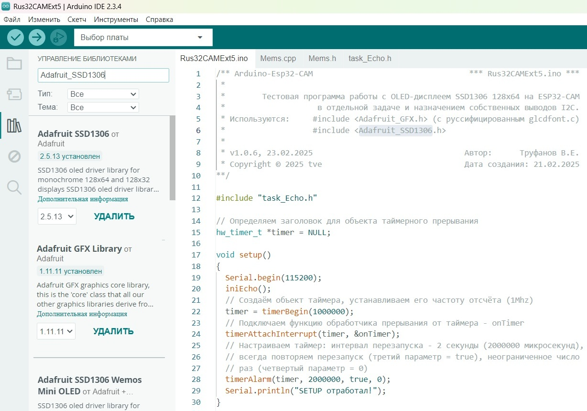

OLED-дисплей (128x64) - это графический дисплей, каждый пиксель которого является отдельным OLED (organic light-emitting diode) светодиодом. В отличии от TFT (Thin-Film Transistor), LCD (ЖК) и других дисплеев, этот дисплей не нуждается в подсветке, каждый пиксель светится самостоятельно, а не затемняет свет подсветки. Благодаря этому черный цвет - действительно чёрный (выключенный светодиод не светится в темноте), а белый цвет - действительно белый (не проходит через слой жидких кристаллов или тонкоплёночных транзисторов).
Использование органических светодиодов позволило достичь угла обзора более 160° и значительно снизить энергопотребление. Так же стоит отметить высокую контрастность (что повышает удобочитаемость текста и изображений), и небольшие размеры дисплея, всего 0.96 дюйма. Всё это, в сочетании с удобством и функциональностью, позволяет сказать что OLED-дисплей (128x64) один из лучших.
Тип дисплея: графический, OLED (organic light-emitting diode) на основе органических светодиодов.
Тип драйвера матрицы: SSD1306.
Разрешение: 128 x 64 точек.
Цвет пикселей (светодиодов): белый.
Количество цветов: белый и черный (монохромный).
Угол обзора: > 160°.
Коэффициент контрастности: 10000:1.
Яркость: >120 кд/м2.
Напряжение питания: 3,3 ... 5 В.
Энергопотребление: до 80 мВт (при свечении всего экрана);
Интерфейс: I2C (поддерживается Arduino, WeMos, STM32, MSP430 и множеством других микроконтроллеров, и отладочных плат).
Адрес на шине I2C: 0x3C или 0x3D выбирается переключателем.
Время отклика < 10 мкс.
Рабочая температура: -40 ... 85 °С.
Габариты: 30x30 мм.Существует несколько библиотек для работы с Oled-дисплеями. Основной пример статьи использует две библиотеки Adafruit_SSD1306.h v2.5.13 и Adafruit_GFX.h v1.11.11, установленные из IDE Arduino.

Подключение этих двух библиотек позволяет работать с дисплеем, но без использования русских букв. Для руссификации дисплея следует в библиотеке Adafruit_GFX.h заменить оригинальный файл шрифтов glcdfont.c на его руссифицированную версию.
Но есть ещё одна особенность. Кодировка символов Oled-дисплея является однобайтовой, поэтому перед загрузкой русских символов их следует перекодировать из Utf8 в Windows-1251. Об этих процедурах хорошо изложено в статье “Русификация библиотеки Adafruit-GFX и вывод русских букв на дисплей в кодировке UTF-8 из Arduino IDE”.
В следующем примере используется подключение Oled-дисплея к плате ESP32-CAM для вывода кратких сообщений журнала приложения с помощью этих инструментов.
В примере контакт SDA дисплея подключается к 14 пину контроллера (GPIO14), а контакт SCL к 13 пину (так как карта microSD не используется). При необходимости можно использовать еще 2 пары контактов (GPIO3 и GPIO1, если не используется аппаратный последовательный порт или GPIO0 и GPIO16).
В приложении отправляются 32-разрядные уведомления в задачу Echo (#include “task_Echo.h”) из двух мест: из таймерного прерывания onTimer() и низкоприоритетного основного цикла loop().
Уведомление имеет следующую структуру:
// Определяем структуру уведомления задачи по работе с дисплеем
// с расщеплением на команды по формированию сообщений приложения
typedef union
{
uint32_t value; // для контрольного значения = 0x1A2B3C4D;
struct
{
uint8_t сode; // код сообщения = 1 байт (от 0 до 255)
unsigned v00:4; // младшая контекстная тетрада (0-15)
unsigned v01:4; // старшая контекстная тетрада (0-15)
uint16_t calc; // счётчик или беззнаковое целое (0-65535)
}
nibbles;
}
split;Уведомления, поступающие в задачу Echo из прерывания содержат код команды uint8_t сode = 1 и значение счетчика прерываний uint16_t calc.
Уведомления, поступающие из основного цикла могут содержать:
/** Arduino-Esp32-CAM *** Rus32CAMExt5.ino ***
*
* Тестовая программа работы с OLED-дисплеем SSD1306 128x64 на ESP32-CAM
* в отдельной задаче и назначением собственных выводов I2С.
* Используются: #include <Adafruit_GFX.h> (с руссифицированным glcdfont.c)
* #include <Adafruit_SSD1306.h>
*
* v1.0.7, 24.02.2025 Автор: Труфанов В.Е.
* Copyright © 2025 tve Дата создания: 21.02.2025
**/
#include "task_Echo.h"
// Определяем заголовок для объекта таймерного прерывания
hw_timer_t *timer = NULL;
void setup()
{
Serial.begin(115200);
iniEcho();
// Создаём объект таймера, устанавливаем его частоту отсчёта (1Mhz)
timer = timerBegin(1000000);
// Подключаем функцию обработчика прерывания от таймера - onTimer
timerAttachInterrupt(timer, &onTimer);
// Настраиваем таймер: интервал перезапуска - 2 секунды (2000000 микросекунд),
// всегда повторяем перезапуск (третий параметр = true), неограниченное число
// раз (четвертый параметр = 0)
timerAlarm(timer, 2000000, true, 0);
Serial.println("SETUP отработал!");
}
// ****************************************************************************
// * Отправить уведомление cо значением задаче из прерывания *
// ****************************************************************************
int i=0; // счётчик прерываний
static split CommAndCalc;
void ARDUINO_ISR_ATTR onTimer()
{
// Резервируем переменную для значения
uint32_t ulStatusRegister;
// Резервируем регистратор приоритета разблокированной задачи
BaseType_t xHigherPriorityTaskWoken;
i++;
CommAndCalc.nibbles.сode=1;
CommAndCalc.nibbles.calc=i;
Serial.print("Прерывание сработало "); Serial.print(i); Serial.println(" раз");
// Готовим значение для передачи с оповещением
ulStatusRegister = CommAndCalc.value;
// Инициализируем xHigherPriorityTaskWoken значением false. При вызове
// функция xTaskNotifyFromISR() разблокирует задачу обработки, и если приоритет
// задачи обработки выше приоритета текущей запущенной задачи, то для функции
// xHigherPriorityTaskWoken автоматически будет установлено значение pdTRUE
xHigherPriorityTaskWoken = pdFALSE;
// Передаём сообщение в задачу обработки от прерывания. xHandlingTask - это дескриптор задачи,
// который был получен когда задача была создана. eSetValueWithOverwrite - заставляем уведомление
// для целевой задачи обязательно быть равным отправляемому значению ulStatusRegister.
xTaskNotifyFromISR(xHandlingEcho,ulStatusRegister,eSetValueWithOverwrite,&xHigherPriorityTaskWoken);
// Принудительно переключаеме контекст на задачу xHandlingTask, так как теперь xHigherPriorityTaskWoken = pdTRUE
portYIELD_FROM_ISR( xHigherPriorityTaskWoken );
}
void loop()
{
// Резервируем переменную для значения
uint32_t ulValue;
// Даём возможность поработать счетчику прерываний без помех
delay(10000);
// Направляем сообщения вверх, code=13
xTaskNotify(xHandlingEcho,13,eSetValueWithOverwrite); // "Вверх - команда на движение строк СНИЗУ-ВВЕРХ"
delay(2000);
// Передаём контрольное сообщение в задачу. xHandlingEcho - это дескриптор задачи,
// который был получен когда задача была создана. eSetValueWithOverwrite - заставляем уведомление
// для целевой задачи обязательно быть равным отправляемому значению ulStatusRegister.
ulValue=0x1A2B3C4D;
xTaskNotify(xHandlingEcho,ulValue,eSetValueWithOverwrite);
delay(2000);
// Передаем учтенные сообщения
xTaskNotify(xHandlingEcho,0,eSetValueWithOverwrite); // "NULL"
delay(2000);
xTaskNotify(xHandlingEcho,2,eSetValueWithOverwrite); // "Привет!"
delay(2000);
xTaskNotify(xHandlingEcho,3,eSetValueWithOverwrite); // "555"
delay(2000);
xTaskNotify(xHandlingEcho,4,eSetValueWithOverwrite); // "Привет МИР, такой очень удивительный"
delay(2000);
xTaskNotify(xHandlingEcho,5,eSetValueWithOverwrite); // "01234567890123456789"
delay(2000);
// Передаем неучтенное сообщение
xTaskNotify(xHandlingEcho,254,eSetValueWithOverwrite); // "Неизвестно"
delay(2000);
// Возвращаем направление движения вниз, code=14
xTaskNotify(xHandlingEcho,14,eSetValueWithOverwrite); // "Вниз - команда на движение строк СВЕРХУ-ВНИЗ"
delay(2000);
xTaskNotify(xHandlingEcho,6,eSetValueWithOverwrite); // "Hello"
delay(2000);
xTaskNotify(xHandlingEcho,7,eSetValueWithOverwrite); // "world"
delay(2000);
xTaskNotify(xHandlingEcho,8,eSetValueWithOverwrite); // "идем"
delay(2000);
xTaskNotify(xHandlingEcho,9,eSetValueWithOverwrite); // "уже"
delay(2000);
xTaskNotify(xHandlingEcho,10,eSetValueWithOverwrite); // "внизёхонько"
delay(2000);
xTaskNotify(xHandlingEcho,11,eSetValueWithOverwrite); // "Сейчас"
delay(2000);
xTaskNotify(xHandlingEcho,12,eSetValueWithOverwrite); // "0123456789"
}
// ******************************************************* Rus32CAMExt5.ino ***/** Arduino-Esp32-CAM *** task_Echo.h ***
*
* Задача вывода сообщений журнала на OLED-дисплее SSD1306 128x64
* на ESP32-CAM с назначенными выводами I2С
*
* Используются: #include <Adafruit_GFX.h> (с руссифицированным glcdfont.c)
* #include <Adafruit_SSD1306.h>
*
* v1.0.7, 24.02.2025 Автор: Труфанов В.Е.
* Copyright © 2025 tve Дата создания: 21.02.2025
**/
#pragma once
#include <Wire.h>
#include <Adafruit_GFX.h>
#include <Adafruit_SSD1306.h>
// Назначаем объекты для работы через шину I2C с OLED-дисплеем
static TwoWire I2Cbus = TwoWire(0); // объект для работы с шиной I2C
static Adafruit_SSD1306 display; // объект дисплея
// Назначаем пины для подключения дисплея по шине I2C к контроллеру
#define I2C_SDA 14 // контакт SDA к GPIO14
#define I2C_SCL 13 // контакт SCL к GPIO13
// Определяем параметры экрана и направления движения строк
#define SCREEN_WIDTH 128 // ширина экрана OLED-дисплея в пикселах
#define SCREEN_HEIGHT 64 // высота экрана OLED-дисплея в пикселах
#define TopToBottom 1 // сверху-вниз
#define FromBottomTop 2 // снизу-вверх
// Определяем структуру уведомления задачи по работе с дисплеем
// с расщеплением на команды по формированию сообщений приложения
typedef union
{
uint32_t value; // для контрольного значения = 0x1A2B3C4D;
struct
{
uint8_t сode; // код сообщения = 1 байт (от 0 до 255)
unsigned v00:4; // младшая контекстная тетрада (0-15)
unsigned v01:4; // старшая контекстная тетрада (0-15)
uint16_t calc; // счётчик или беззнаковое целое (0-65535)
}
nibbles;
}
split;
// ****************************************************************************
// * Сформировать сообщение приложения для OLED-дисплея SSD1306 *
// * по коду из поступившего уведомления *
// ****************************************************************************
#define def(ncase,mmess) case (ncase): mess=(mmess); break; // макрос функции
/* Описания кодов:
1 - поступило значение счетчика прерываний
13 - поступила команда начать движение строк СНИЗУ-ВВЕРХ
14 - поступила команда начать движение строк СВЕРХУ-ВНИЗ
0x1A2B3C4D - контрольное сообщение "0x1A2B3C4D"
Остальные коды вызывают вывод на дисплей соответствующих сообщений
*/
String TakeMess(uint8_t code)
{
String mess;
switch (code) {
def (0x1A2B3C4D,"0x1A2B3C4D")
def ( 0, "NULL")
def ( 1, ": ISR")
def ( 2, "Привет!")
def ( 3, "555")
def ( 4, "Привет МИР, такой очень удивительный")
def ( 5, "01234567890123456789")
def ( 6, "Hello")
def ( 7, "world")
def ( 8, "идем")
def ( 9, "уже")
def (10, "внизёхонько")
def (11, "Сейчас")
def (12, "0123456789")
def (13, "Идем ВВЕРХ")
def (14, "Поток ВНИЗ")
default: mess="Неизвестно"; break;
}
return mess;
}
// ****************************************************************************
// * Отрезать лишние символы справа *
// * (по умолчанию задача настраивает вывод на дислей символы среднего *
// * размера - четыре строки по не более чем 10 символов) *
// ****************************************************************************
String squezy(String str)
{
String strUtf8;
return strUtf8=str.substring(0,10);
}
// ****************************************************************************
// * Перекодировать русские буквы из UTF-8 в Win-1251 *
// ****************************************************************************
String utf8rus(String source)
{
int i,k;
String target;
unsigned char n;
char m[2] = { '0', '\0' };
k = source.length(); i = 0;
while (i < k)
{
n = source[i]; i++;
if (n >= 0xC0)
{
switch (n)
{
case 0xD0:
{
n = source[i]; i++;
if (n == 0x81) { n = 0xA8; break; }
if (n >= 0x90 && n <= 0xBF) n = n + 0x30;
break;
}
case 0xD1:
{
n = source[i]; i++;
if (n == 0x91) { n = 0xB8; break; }
if (n >= 0x80 && n <= 0x8F) n = n + 0x70;
break;
}
}
}
m[0] = n; target = target + String(m);
}
return target;
}
// ****************************************************************************
// * Отработать задачу по выводу сообщений на OLED-дисплей SSD1306 *
// ****************************************************************************
void Echo (void* pvParameters)
{
int i; // счетчик внутренних циклов
uint32_t ulInterruptStatus; // уведомление к задаче
static split EchoComm; // расщепление уведомления
static int direction=TopToBottom; // текущее направление движения строк
// Инициируем программную шину I2C
I2Cbus.begin(I2C_SDA,I2C_SCL,100000);
// Подключаем дисплей к шине
Adafruit_SSD1306 display(SCREEN_WIDTH, SCREEN_HEIGHT, &I2Cbus, -1);
if(!display.begin(SSD1306_SWITCHCAPVCC, 0x3C))
{
Serial.println("SSD1306 - ошибка подключения к I2C");
//for(;;);
}
vTaskDelay(97/portTICK_PERIOD_MS);
// Включаем использование новых версий Adafruit-GFX (в том числе руссификация)
display.cp437(true);
// Выбираем средний размер шрифта и цвет
display.setTextSize(2);
display.setTextColor(WHITE);
// Выполняем начальное заполнение массива сообщений
String aLines[4];
aLines[0]=" "; aLines[1]=" "; aLines[2]=" "; aLines[3]=" ";
// Делаем первый вывод на экран
display.clearDisplay();
for (i=0; i<4; i++)
{
display.setCursor(0,i*16);
display.println(aLines[i]);
}
display.display();
vTaskDelay(97/portTICK_PERIOD_MS);
// Циклически отрабатываемпоступающие уведомления
while (1)
{
// Ждём получения уведомления, которое будет отправлено непосредственно в эту задачу.
xTaskNotifyWait (
0,
0,
&ulInterruptStatus, // для приёма значения
portMAX_DELAY // блокировка до приема на неопределённый срок
);
// Выполняем обработку уведомления
EchoComm=split(ulInterruptStatus);
// Выделяем команду
uint8_t inсode=EchoComm.nibbles.сode;
// Формируем сообщение текущей строки
String inmess="Undefaund!";
if (EchoComm.value==0x1A2B3C4D) inmess="Контроль";
else if (inсode==1) inmess=String(EchoComm.nibbles.calc)+TakeMess(inсode);
// При необходимости устанавливаем направление движения строк вверх
// def (13, "Вверх - команда на движение строк СНИЗУ-ВВЕРХ")
else if (inсode==13)
{
direction=FromBottomTop;
inmess=TakeMess(inсode);
}
// Или устанавливаем направление движения строк вниз
// def (14, "Вниз - команда на движение строк СВЕРХУ-ВНИЗ")
else if (inсode==14)
{
direction=TopToBottom;
inmess=TakeMess(inсode);
}
else inmess=TakeMess(inсode);
// Сдвигаем 3 строки на 1 позицию, заполняем первую
for (i=3; i>0; i--)
{
aLines[i]=aLines[i-1];
}
aLines[0]=squezy(utf8rus(inmess));
// Очищаем в мгновение дисплей
display.clearDisplay();
// Выводим строки на дисплей сверху-вниз
if (direction==TopToBottom)
{
for (i=0; i<4; i++)
{
display.setCursor(0,i*16);
display.println(aLines[i]);
}
}
// Или снизу-вверх
else
{
for (i=0; i<4; i++)
{
display.setCursor(0,i*16);
display.println(aLines[3-i]);
}
}
// Зажигаем дисплей
display.display();
vTaskDelay(97/portTICK_PERIOD_MS);
}
}
// ****************************************************************************
// * Определить задачу по выводу сообщений на Oled-дисплей *
// * по блокирующим уведомлениям к задаче *
// ****************************************************************************
// Определяем заголовок задачи Echo, играющей роль блокированных действий.
// Другая задача RTOS (или обработчик прерывания) вызовет функцию оповещения,
// а затем будет ожидать его в заблокированном состоянии (чтобы не использовать
// процессорное время) до тех пор, пока не будет получено уведомление о
// завершении передачи. Передача осуществляется с помощью DMA и в завершении
// прерывания также DMA используется для отправки уведомления задаче
static TaskHandle_t xHandlingEcho = NULL;
// Определяем задачу Echo
void iniEcho()
{
xTaskCreatePinnedToCore (
Echo, // название функции, которая будет запускаться, как параллельная задача
"Echo", // название задачи
3072, // размер стека в байтах
NULL, // указатель на параметр новой задаче. NULL, если параметр не передаётся.
1, // приоритет задачи
&xHandlingEcho, // дескриптор (указатель или заголовок) на задачу
1 // идентификатор ядра процессора, на котором требуется запустить задачу.
);
}
// ************************************************************ task_Echo.h ***Так как разработчиками FreeRTOS была реализована идея замены семафоров и мьютексов 32-разрядными уведомлениями к задачам возникла потребность интерпретировать всяко-разно само уведомление.
И здесь хорошо употребить конструкцию union, которая позволяет манипулировать данными Arduino и объединение их с помощью структур.
Union позволяет объединить и записать несколько переменных в однобайтовый массив для отправки по Bluetooth, i2c, EspNow или любому другому протоколу, работающему с массивами;
позволяет записать данные в одном формате, а затем прочитать в другом.